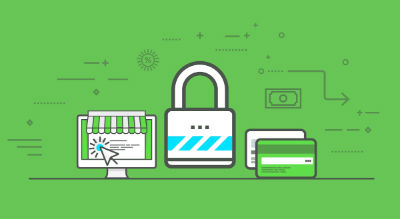

HTTPS(Hyper Text Transfer Protocol over Secure Socket Layer) is a HTTP channel with security as its goal. It is simply a secure version of HTTP. That is to say, the SSL layer is
added to HTTP, and the security foundation of HTTPS is SSL, so the detailed content of encryption needs SSL. It is a
URI scheme (Abstract identifier system), syntax similar to http: system. Used for secure HTTP data transmission. Https:
URL indicates that it uses HTTP, but HTTPS has a default port different from HTTP and an encryption / authentication
layer (between HTTP and TCP).
How to set up HTTPS?

First of all, in order to set up a https
website, you have got to have a dedicated IP address. Most of the small websites sharing your IP address with other
websites that are using the same location. However, Holding a dedicated IP makes you can keep your IP address is only
going to your websites, and no one else. So, having a dedicated IP address is the first important thing when you trying
to keep your website in safety. Second, the next thing you need to do is buy a certificate. It is for proving the
website is yours. It is like an ID card for your website. You can create a certificate by yourself, but in that way,
most of the popular websites will not recognize your certificate. So, the best way to get a website certificate is to
buy on from these authorized websites or you can get a free one from some companies. After you buy your website
certificate, the next thing to do is activate your certificate. It is a little bit complicated, the best way is to wait
1-2 days, let your web host do this step for you. The following step after you activate your certificate is to install
the certificate. For this step, all you need to do is paste your certificate into your website host control panel, and
submit the "Install an SSL Certificate". After you finish all the steps above, there is still one more thing you need
to do. Update your site to use HTTPS. You have to update your links to use the HTTPS links, that way the visitors are
being protected. By the way, there are only a few pages you need to protect, such as your login page or cart checkout
page. Protecting unnecessary pages will just slow down your website. That is all things you need to do to make your own
https website. Thanks for your time to read my research.